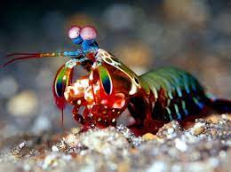
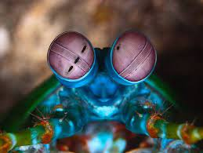
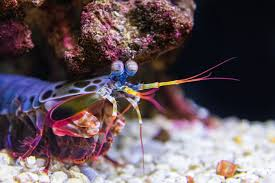
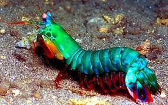

Fatos sobre o Stomatopoda
Informações gerais
Nome científico : Stomatopoda (por exemplo, Odontodactylus scyllarus ) Outros nomes : estomatópode, gafanhoto do mar, divisor de polegar, matador de camarão
Na tabela a seguir constam informações biológicas do animal:
| Reino | Animalia |
| Filo | Arthropoda |
| Crustáceos | |
| Classe | Malacostraca |
| Subclasse | Hoplocarida |
| Ordem | Stomatopoda |
Descrição
Existem mais de 500 espécies de camarões mantis em uma variedade de tamanhos e arco-íris de cores. Como outros crustáceos, o camarão mantis possui uma carapaça ou concha. Suas cores variam do marrom aos tons vívidos do arco-íris. As garras do camarão mantis são sua característica mais marcante. Dependendo da espécie, o segundo par de apêndices - conhecidos como garras raptoriais - agem como clavas ou lanças. O camarão mantis pode usar suas garras para golpear ou esfaquear suas presas.
Visão
Os estomatópodes têm a visão mais complexa do reino animal, superando até a das borboletas . O camarão mantis tem olhos compostos montados em talos e pode girá-los independentemente um do outro para examinar seus arredores. Enquanto os humanos têm três tipos de fotorreceptores, os olhos do camarão mantis têm entre 12 e 16 tipos de células fotorreceptoras. Algumas espécies podem até ajustar a sensibilidade de sua visão de cores.
Distribuição
O camarão mantis vive em águas tropicais e subtropicais em todo o mundo. A maioria das espécies vive nos oceanos Índico e Pacífico. Algumas espécies vivem em ambientes marinhos temperados. Os estomatópodes constroem suas tocas em águas rasas, incluindo recifes, canais e pântanos.
Reprodução e Ciclo de Vida
Em média, um camarão mantis vive 20 anos. Durante sua vida, ele pode se reproduzir de 20 a 30 vezes. Em algumas espécies, a única interação entre machos e fêmeas ocorre durante o acasalamento.
Dieta e caça
Na maior parte, o camarão mantis é um caçador solitário e recluso. Algumas espécies perseguem ativamente as presas, enquanto outras esperam dentro do covil. O animal mata desdobrando rapidamente suas garras raptoriais com uma aceleração surpreendente de 102.000 m / s2 e velocidade de 23 mps (51 mph). O ataque é tão rápido que ferve a água entre o camarão e sua presa, produzindo bolhas de cavitação. Quando as bolhas entram em colapso, a onda de choque resultante atinge a presa com uma força instantânea de
Referências bibliográficas
- https://pt.wikipedia.org/wiki/Stomatopoda
- https://repositorio.ufpb.br/jspui/handle/tede/4113?locale=pt_BR
- https://repositorio.ufpe.br/handle/123456789/8440